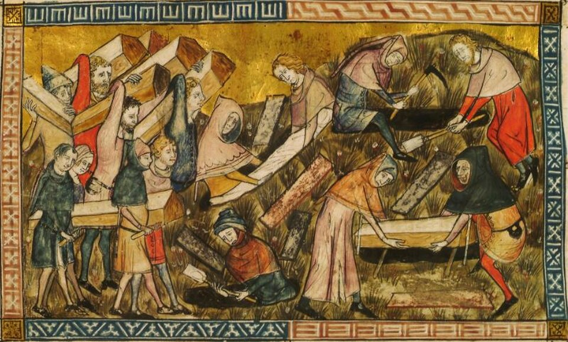

Galeras venidas de Oriente traen a Mesina una pestilencia que mata en tres días
Doce naves genovesas procedentes del mar Negro entraron a puerto con sus tripulaciones moribundas, marcadas por bubas negras que ningún físico sabe curar. La ciudad las expulsó, pero el mal ya camina por sus calles.

En estos primeros días de octubre atracaron en el puerto de esta ciudad doce galeras genovesas que regresaban del comercio en Caffa, allá donde los tártaros sitian a los mercaderes cristianos. Lo que traían en las bodegas no era sólo especia y seda: los remeros venían muriendo sobre los bancos, y los que bajaron a tierra mostraban en ingles y axilas unas hinchazones del tamaño de un huevo, negras como el carbón, que los marinos llaman bubas. El que las tiene, dicen, escupe sangre al segundo día y está con Dios —o con quien lo reclame— al tercero.
Las autoridades del puerto, viendo la mortandad, ordenaron a las naves malditas hacerse a la mar, y las galeras partieron a repartir su carga por los puertos de la cristiandad. Tarde: el mal ya había bajado a tierra, y en los barrios del puerto se muere de a familias enteras. Los físicos disputan si la corrupción viene del aire, de la conjunción de los astros o del castigo de Dios por los pecados del siglo; los boticarios venden triacas y vinagres que no salvan a nadie, y los sepultureros, únicos que no dan abasto por exceso de trabajo, empiezan a cobrar en oro.
Los mercaderes genoveses refieren el origen con espanto: en Caffa, su factoría del mar Negro, el ejército tártaro que la sitiaba comenzó a morir de esta pestilencia, y su kan, antes de retirarse, hizo arrojar con las catapultas los cadáveres de sus propios hombres por encima de las murallas, para que la muerte entrara donde sus soldados no habían podido. Verdad o exageración de sitiados, lo cierto es que el mal viene caminando desde hace años por las rutas de la seda, de oasis en caravasar, y que encuentra a la cristiandad en su hora más flaca: una generación de malas cosechas y hambrunas ha dejado los cuerpos sin defensa, y las ciudades se apiñan detrás de sus murallas, donde se duerme de a seis por cuarto y las ratas conocen todas las despensas.
En Mesina ya no se entierra de a uno sino de a zanjas, y el espanto hace su propia obra: hay padres que no acuden al hijo enfermo, confesores que absuelven desde la puerta y notarios que mueren a mitad del testamento que estaban tomando. La ciudad pidió a Catania el socorro de las reliquias de Santa Ágata, y los catanenses se negaron a que viajaran, no fuera que la santa no volviese; vinieron aguas benditas y procesiones, y la mortandad no distinguió a los devotos. Los precios cuentan la otra crónica: el ataúd vale ya lo que una mula, y un físico que acepte entrar a una casa marcada, sencillamente, no tiene precio.
Los que pueden, huyen a los campos, y es de temer que lleven consigo la semilla de lo que huyen. Quien esto escribe ha oído a los mercaderes contar que la pestilencia viene arrasando desde la China y la India, y que donde entra no deja una casa sin luto. Si es verdad la mitad de lo que cuentan, Europa está ante un huésped que no distingue papa de mendigo, y estas líneas se escriben sin saber si habrá en unos meses quién las lea. Dios tenga piedad; los hombres, entre tanto, hagan testamento.